..7..8..9..10
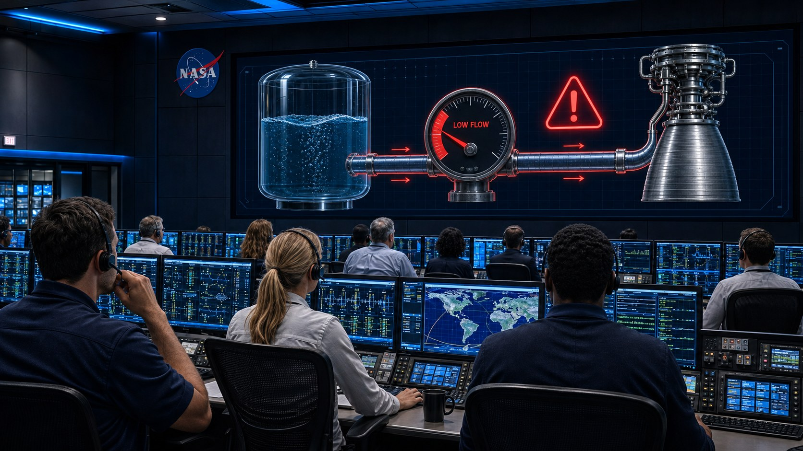
رصد نظام التحكم عطلًا:
يستغرق السائل وقتًا أطول من اللازم للوصول إلى المحرك.
لتحديد مصدر العطل، فحص مهندسو الفضاء ثلاث عينات أُخذت
من نظام السوائل في المركبة الفضائية.
جميع العينات بدأت من النقطة نفسها، وفُحصت في أنابيب متطابقة، ولمدة الزمن نفسه.
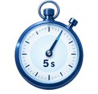
لاحظوا المسافة التي قطعتها كل عينة بعد 5 ثوانٍ.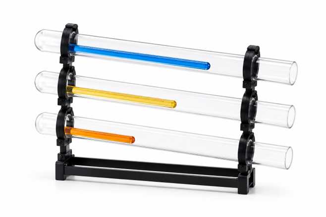
استنادًا إلى الفحص الذي شاهدتموه، أيّ عينة تعتقدون أنها تسبّبت
بالعطل؟
اكتبوا فرضيتكم واشرحوا على ماذا استندتم.
العينة ج هي المشتبه في تسبّبها بالعطل: فقد قطعت
أقصر مسافة في الأنبوب، ولذلك تتوافق مع حالة يصل فيها السائل
إلى المحرك ببطء أكثر من اللازم.
لفهم سبب العطل ومعرفة ما إذا كانت فرضيتكم صحيحة، سنتعلّم اليوم:
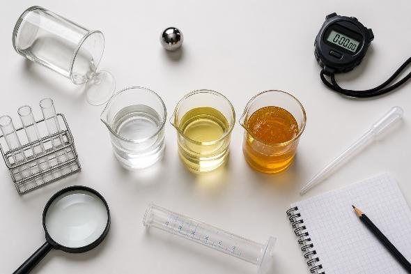
انقروا على الأوعية الفارغة لنقل الماء إليها.
انتبهوا: ما الذي يتغيّر وما الذي يبقى ثابتًا؟
هي تتدفق
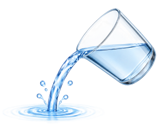
تأخذ شكل الوعاء الذي توجد فيه
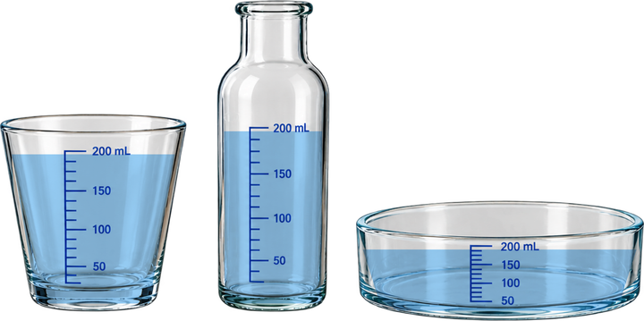
يبقى حجمها ثابتًا عند درجة حرارة معيّنة
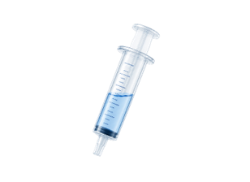
انقروا على البطاقات واكتشفوا الاستخدام الذي تتيحه كل خاصية من خصائص السوائل.
حتى الآن تعلّمنا ما هو مشترك بين جميع السوائل.
الآن سنكتشف ما الذي يمكن أن يختلف بينها.
انظروا إلى الصورة:
جميع من في الصورة ينتمون إلى مجموعة واحدة، فهم جميعًا طلاب.
لديهم صفات مشتركة،
لكن لديهم أيضًا صفات تميّز بينهم.
هل تتذكّرون السائل الذي لم يصل إلى المحرك؟ حان الوقت للتعرّف إلى خصائص إضافية للسوائل لفهم سبب العطل:
درجة الغليان
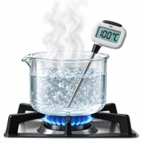
درجة الحرارة التي يبدأ عندها السائل
بالغليان والتحوّل إلى غاز
الكثافة
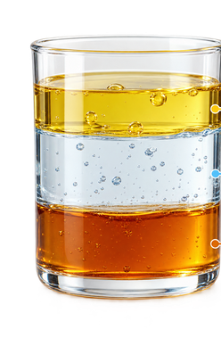
مقدار الكتلة في وحدة حجم
اللُّزوجة
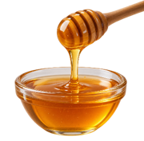
مقدار مقاومة السائل للتدفق
سنركّز الآن على اللزوجة ونتعرّف إليها بعمق أكبر قليلًا.
اللزوجة هي مدى مقاومة السائل للجريان.
اللزوجة المنخفضة - السائل يتدفق بسرعة.
اللزوجة العالية - السائل يتدفق ببطء.
في المختبر بانتظاركم سائلان مختلفان.
مهمتكم: اكتشاف أيّهما أكثر لزوجة باستخدام تجربة علمية.
مراحل المهمة:
المرحلة 1 | تخطيط التجربة
لدَيكم سائلان مختلفان.
لفحص مدى لزوجتهما، سنُسقط كرة في كلّ منهما ونقيس زمن سقوطها إلى الأسفل داخل السائل.
اختاروا ظروف التجربة
بحيث يمكنكم المقارنة بين السائلين
بطريقة عادلة.
السائل أ
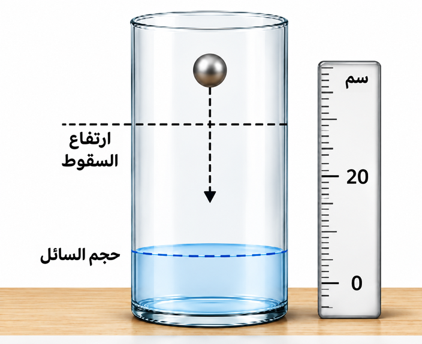
انقروا على اختيارِكم:
السائل ب
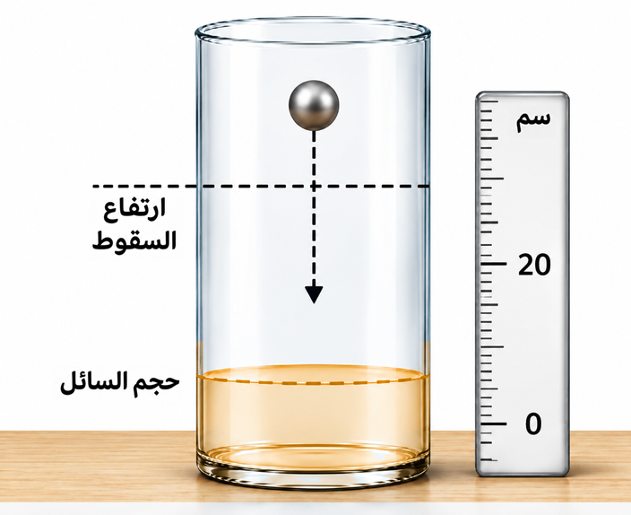
انقروا على اختيارِكم:
لقد صممتم تجربة لمقارنة لزوجة سائلين، مع الحفاظ على شروط متطابقة
وتغيير نوع السائل فقط.
ننتقل الآن إلى المرحلة 2 - ننفّذ التجربة ونجمع البيانات.
في المختبر ينتظركم تجهيز تجريبي أُعدّ وفق المبدأ نفسه.
هل أنتم مستعدون لبدء القياس؟
المرحلة 2 | نُجري التجربة
ونجمع البيانات
سنجري الآن التجربة التي خطّطنا لها:
في كل تجربة سنُسقط الكرة من الارتفاع
نفسه، ونقيس زمن الغوص.
نفّذوا التجربة 3 مرات لكل
سائل، وسجّلوا أزمنة
الغوص ومتوسطها في الجدول.
تكون ظروف التجربة متطابقة في السائلين
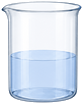
ارتفاع السقوط: 20 سم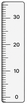
نوع الكرة: كرة معدنية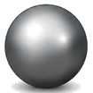
المرحلة 2 اكتملت ✓
نفّذتم التجربة وجمعتم البيانات ونظّمتموها في جدول وحسبتم
متوسط زمن الغوص في كل سائل.
حان الوقت الآن لمقارنة النتائج واستخلاص استنتاج.
أنتهيتم!
ماذا فعلنا إذن؟
1. خطّطنا تجربة مقارنة
2. أجرينا التجربة وجمعنا البيانات
3. حللنا النتائج
4. استخلصنا النتيجة
تذكّروا: كلما كان الجريان أبطأ، كانت اللزوجة أعلى.
سؤالان بسيطان للإحماء قبل أن نتقدم